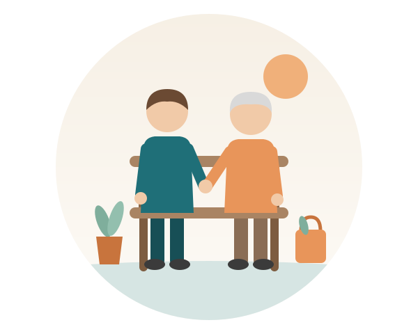

Unsere Leistungen
Wir unterstützen Sie im Alltag, damit Sie gut in Ihrer Wohnung leben können. Dabei machen wir die Dinge gemeinsam mit Ihnen.

Gesellschaft leisten
- Gespräche führen und zuhören
- Vorlesen, Gesellschaftsspiele und Rätsel
- Gedächtnistraining
- Gemeinsam Fotos ansehen, Musik hören oder Handarbeiten machen
- Spaziergänge in Ihrem Tempo
Begleiten
- Zum Arzt, zu Ämtern und zur Bank
- Zum Friseur und zum Einkaufen
- Zu Seniorentreffs, Kulturangeboten oder zum Gottesdienst
Wir sind an Ihrer Seite, auch auf dem Weg dorthin.
Im Haushalt mithelfen
- Einkäufe gemeinsam planen und erledigen
- Gemeinsam aufräumen
- Leichte Hausarbeit, zum Beispiel Wäsche zusammenlegen oder Geschirr spülen
- Kleine Mahlzeiten zusammen zubereiten
Den Alltag ordnen
- Hilfe bei Terminen und beim Tagesablauf
- Post und Unterlagen gemeinsam sichten und ordnen
- Hilfe beim Kontakt zu Familie und Freunden, zum Beispiel beim Telefonieren oder Briefeschreiben
Auch bei Demenz
Wir begleiten auch Menschen mit Demenz oder starker Vergesslichkeit. Wir nehmen uns Zeit und gehen auf jeden Menschen ein.
Wann wir kommen
- Zu festen Zeiten, nach Absprache mit Ihnen
- Wie oft und wie lange wir kommen, besprechen wir gemeinsam
- Alle Einzelheiten klären wir im Erstgespräch
Was nicht dazugehört
- Pflege, zum Beispiel Waschen, Duschen oder Anziehen
- Medikamente geben
- Garten- und Handwerksarbeiten
- Tierbetreuung
- Reine Fahrdienste
Brauchen Sie Pflege? Dann nennen wir Ihnen gern einen Pflegedienst.
Lernen wir uns kennen
Ob für Sie selbst oder für einen Angehörigen: Melden Sie sich gern, auch wenn Sie noch unsicher sind. Das Erstgespräch bei Ihnen zu Hause ist kostenlos und unverbindlich.